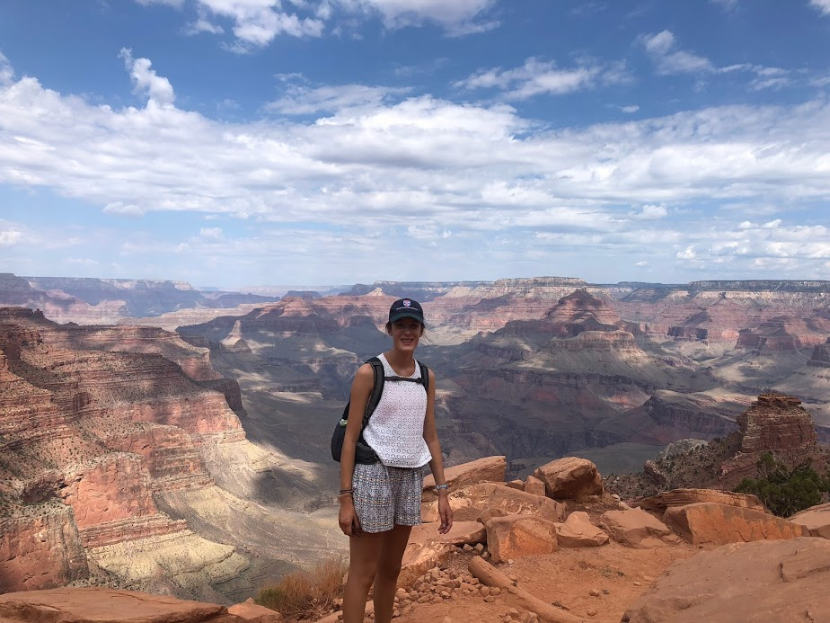
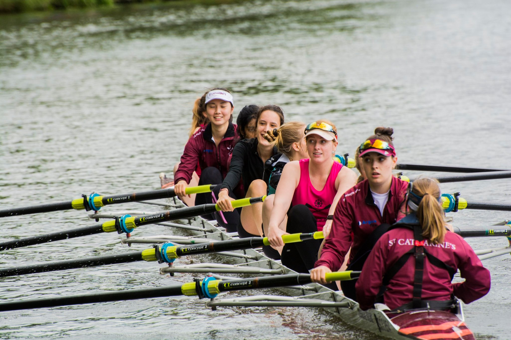

Hello, I'm Astrid de Boysson!

Programmer in the making
I am learning to code at Le Wagon coding bootcamp and will soon be starting
my career in digital consulting. Before Le Wagon, I studied economics, geography
and management in the UK and particularly enjoyed researching how new technologies
can change many industries. I love travelling 🌍, coding 🖥 and rowing 🚣♀️
Travelling
I have had an extremelly international upbringing, having lived in France,
the UK and Bahrain. Therefore, I have come to love discovering new places and
cultures. Among the countries I visited, my personal favourites are: Jordan,
Oman, Myanmar, India and the US West Coast!

Coding
I never thought I would become a coder. However, I realised throughout my degree
and internships that coding is an essential skill to have in today's digital age. Le
Wagon introduced me to the tech environment, which I came to love 🤓!
Discover Le Wagon
Rowing
I picked up rowing during my year in Cambridge and I fell in love with the sport!
Rowing not only gave me discipline, but also tought me how to challenge myself and work
as a team. Whilst the early mornings were tough, the bump races were messy and the ergs were
painful, the experience was incredible!
